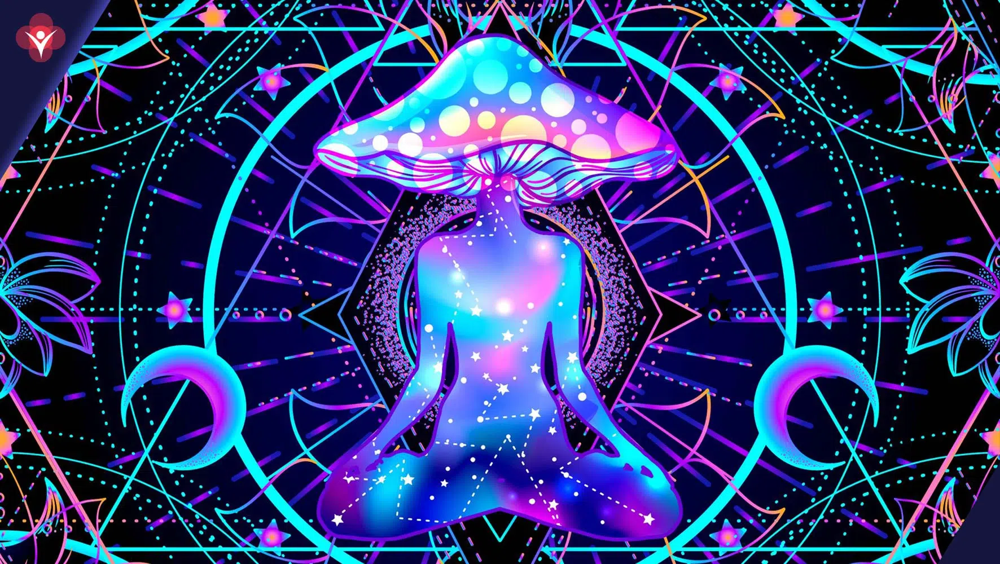

Os psicodélicos, também conhecidos como enteógenos, são substâncias que induzem estados alterados de consciência. Isso porque atuam no sistema nervoso central, afetando os neurotransmissores e os receptores cerebrais, o que gera efeitos profundos na percepção, na cognição e na emoção.
